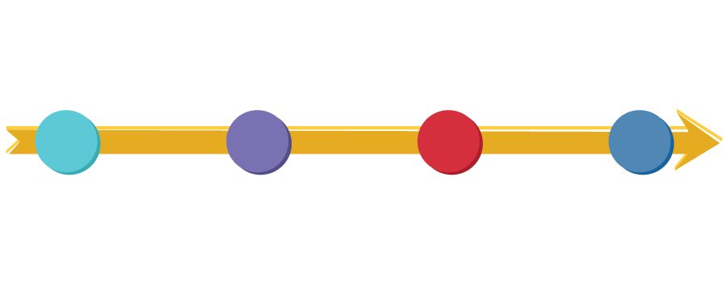

Planeación
Precontractual
Contractual
Postcontractual
Se puede definir la Contratación Estatal como el conjunto de procedimientos que realizan las entidades del Estado para adquirir los bienes o servicios que requieren, a partir de las normas aplicables.
Texto
Nos referimos a buenas prácticas regulatorias cuando la regulación atiende una verdadera necesidad y no simplemente surge como una respuesta sin sentido a algún problema.
Nos referimos a buenas prácticas regulatorias cuando la regulación atiende una verdadera necesidad y no simplemente surge como una respuesta sin sentido a algún problema.
Nos referimos a buenas prácticas regulatorias cuando la regulación atiende una verdadera necesidad y no simplemente surge como una respuesta sin sentido a algún problema.
Nos referimos a buenas prácticas regulatorias cuando la regulación atiende una verdadera necesidad y no simplemente surge como una respuesta sin sentido a algún problema.